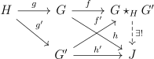

The notion of the fundamental group captures the idea of homotopy classes of loops in our space, but unfortunately requires us to pick a base-point from which our loops start and end. We saw that for this still gives a functor from spaces to groups, but sometimes it is more convenient to work with spaces without base-points, or with multiple base-points. In these situations, we can replace the fundamental group with the more natural fundamental groupoid.
Definition 1.1. A groupoid is a category where every arrow is an isomorphism. A group is a groupoid with one object.
Definition 1.2. Given a space \(X\), \(\Pi _1(X)\), called the fundamental groupoid of \(X\), is the groupoid formed by letting the objects be points in \(X\), and the arrows be homotopy classes of paths between points.
The same arguments showing the fundamental group is a group show that \(\Pi _1(X)\) is a groupoid. Note that we can recover the fundamental group as \(\pi _1(X,x) = \Aut (x)\) where \(x\) is the object in \(\Pi _1(X)\).
A morphism of groupoids is a functor. A map \(X \to Y\) induces a map \(\Pi _1(X) \to \Pi _1(Y)\) by composing the path with the map. If \(F,F':G \to G'\) are morphisms of groupoids, then a homotopy \(H: F \to F'\) is a natural transformation. In other words, for each \(g \in G\) we are given an arrow \(F(g) \xrightarrow []{H_g} F'(g)\) that is natural in the sense that given an arrow \(f: g \to g'\), the diagram below should commute:
We can write the existence of a homotopy between \(F,F'\) as \(F \simeq F'\) (the same notation for two continuous functions being homotopic). If \(F,G:X \to Y\) are maps of spaces and \(H\) a homotopy between them, then \(H\) naturally induces a homotopy \(\Pi _1(F) \to \Pi _1(G)\) (figure out how it is defined).
Say that two groupoids \(G,G'\) are equivalent if they are equivalent as categories. More explicitly, there are maps \(F:G \to G',F':G' \to G\) such that \(F \circ F'\) and \(F' \circ F\) are homotopic to the identity. Since homotopic maps of spaces induces homotopies of the induced map on groupoids, the equivalence class of our groupoid is well-defined up to a homotopy equivalence.
A groupoid is connected iff it is nonempty and it has one isomorphism class. The fundamental groupoid of a path-connected space is connected.
Exercise 1.2.1. A connected groupoid is equivalent to a unique group, and the group is given by the automorphisms of any object.
So the fundamental groupoid captures essentially the same data as the fundamental group, it just doesn’t use base-points.
As we can do within any category, we can try to take limits and colimits of groupoids. The general definition will not be given here (see any book on categories), but we will need here only the definition of a pushout of groupoids.
Definition 2.1. The pushout of groupoids \(G,G'\) along a groupoid \(H\) with maps \(g,g'\) into \(G,G'\) is defined to be a groupoid denoted \(G\star _{H}G'\) with maps \(f,f'\) from \(G,G'\) into it such that \(f'\circ g' = f \circ g\) satisfying the following universal property: given morphisms \(h,h'\) from \(G,G'\) to a groupoid \(J\) such that \(h'\circ g' = h \circ g\), there is a unique morphism \(G\star _{H}G' \to J\) such that the diagram below commutes:

For example, if \(G,G'\) are actually groups, and \(H\) is trivial, then \(G\star _H G\) is just the free product of groups.
Theorem 2.2 (Seifert van-Kampen). Suppose that \(U,V\) are open subsets covering a space \(X\). Then the diagram from the natural inclusions
form a pushout diagram.
Proof. We will verify the universal property. Suppose we have maps \(f_1,f_2:\Pi _1(U),\Pi _2(V) \to J\) that agree on \(\Pi _1(U\cap V)\). Given a path \(\gamma : [0,1]\to X\), we can cut it into segments \(\xi _i: [t_i,t_{i+1}]\to G, i<n\) where \(t_0 =0,t_n = 1\), and \(\gamma \) restricted to each interval lies entirely in either \(U\) or \(V\). Then identifying the intervals \([t_i,t_{i+1}]\) with \([0,1]\), we find that \(\gamma \) is homotopic to \(\xi _{n-1}\circ \xi _{n-2}\circ \dots \circ \xi _0\). Since each \(\xi _i\) is in the image of \(\Pi _1(U)\) or \(\Pi _1(V)\), this shows uniqueness of the homomorphism to \(J\), as the image of \(\gamma \) is determined by where \(f_1,f_2\) send the \(\xi _i\). For existence, we will try to define the map \(f(\gamma )\) via the composite of where \(f_1,f_2\) send the \(\xi _i\). If some \(\xi _i\) was in both \(U\) and \(V\), it is in \(U\cap V\) so our map is not dependent on our choice of which open set we have chosen. However it remains to show both that our map doesn’t depend on the subdivision of \(\gamma \) and that it is a homotopy invariant.
To see that \(f(\gamma )\) independent of the subdivision, we only need to show that it is invariant under refinements of the subdivision, as any two subdivisions have a common refinement. But this follows for the same reason as the fact that \(\gamma \) is homotopic to \(\xi _{n-1}\circ \xi _{n-2}\circ \dots \circ \xi _0\), where now \(\gamma \) is one of the sub-intervals in the original partition, and the \(\xi _i\) are the sub-intervals in the refinement contained within.
Finally to see that \(f(\gamma )\) is a homotopy invariant, suppose that \(\gamma = \gamma _0\), where \(\gamma _r\) is a homotopy of paths with the endpoints fixed. It will be shown that it is locally a homotopy invariant in \(r\) so that by connectedness we will be done. But then by compactness of the interval, we can assume that for a fixed subdivision \(t_i\), \(f(\gamma _r)\) is defined for each \(r\), as this is true locally. Now slightly change the homotopy \(\gamma _r\) to be a homotopy \(\gamma '_r\) such that \(\gamma _0 = \gamma '_0\), such that it is constant on each \(t_i\), and such that the homotopy stays inside \(U\) or \(V\) on each subinterval, as indicated in the picture below:
Let \((\xi _r)_i\) be the \(i^{th}\) sub-interval of \(\gamma '_r\) and \((\xi '_r)_i\) be the \(i^{th}\) subinterval of \(\gamma '_r\). Now \((\xi _0)_i\) is homotopic to \((\xi '_1)_i\) by restricting \(\gamma '_r\). However, by changing the subdivision of \((\xi '_1)_i)\) to only contain points in \((\xi '_1)_i\), we see that \((\xi '_1)_i\) is homotopic relative to \(U,V\) and the subdivision to \((\xi _1)_i\). Thus \(f(\gamma _0) = f((\xi _0)_{n-1}\circ (\xi _0)_{n-2}\circ \dots \circ (\xi _0)_0) = f((\xi '_1)_{n-1}\circ (\xi '_1)_{n-2}\circ \dots \circ (\xi '_1)_0)\) \(= f((\xi _1)_{n-1}\circ (\xi _1)_{n-2}\circ \dots \circ (\xi _1)_0) = f(\gamma _1)\). □
It is hard to compute \(\pi _1\) using all the base-points, but the the theorem becomes much more useful if we have some choice as to which base-points to use. Given a set of base-points \(A \subset X\), let \(\Pi _1(U,A)\) for any open set \(U\) be the sub-groupoid of the fundamental groupoid where the objects are in \(A\). Analogously for groupoids, let \(A\) is a set of objects in a groupoid \(G\) and define \(G_A\) to be \(G\) restricted to those objects. If \(A\) contains an object from every isomorphism class of \(G\), then \(G_A\) is equivalent to \(G\). More importantly, the following result is true:
Exercise 3.0.1. Let \(g,g':H \to G,G'\) be morphisms of groupoids, and suppose that \(A\) is a set of objects of \(H\) such that \(A\) contains every isomorphism class of \(H\) and \(g(A),g'(A')\) contains every isomorphism class of \(G,G'\). Then the inclusion maps induce an equivalence \(G_{g(A)}\star _{H_A} G'_{g(A)} \to G\star _H G'\).
Let’s use this to compute \(\pi _1(S^1)\). If our model of \(S^1\) is the unit circle in \(\CC \), let \(U = S^1-\{1\}\) and let \(V = S^1 - \{-1\}\), and let \(A = \{i,-i\}\) Then \(A\) satisfies the conditions of the exercise. \(\Pi _1(U,A)\) is the groupoid with a single isomorphism \(a\) from \(i \to -i\) since the fundamental group of \(U\) is trivial. Similarly \(\Pi _1(V,A)\) consists of one isomorphism \(b\) from \(-i\) to \(i\). \(\Pi _1(U\cap V,A)\) consists of the objects \(i,-i\) with no non-identity arrows. Then the pushout will be the groupoid with \(i,-i\) and both the arrows \(a,b\) satisfying no relations i.e. \(ba\) and \(ab\) generate free groups. Indeed, given morphisms from \(\Pi _1(V,A)\) and \(\Pi _1(U,A)\) to \(J\) that agree on \(\Pi _1(U\cap V,A)\), they must send the \(i,-i\) in \(U,V\) to the same thing, which will be what \(f(i),f(-i)\) will be defined to be. Moreover, \(f(a),f(b)\) must be whatever the map from \(\Pi _1(U,A),\Pi _1(V,A)\) sends \(a,b\) to. Thus the map is unique. It exists since we have put no relations between \(a,b\). Then \(\pi _1(S^1,i) = \Aut (i)\) is the free group generated by \(ba\), and in particular is isomorphic to \(\ZZ \).